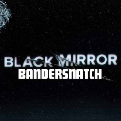

 In “Black Mirror: Bandersnatch,” a choose-your-own-adventure film set in the 80’s in which the viewer controls the actions of the main character, a video game designer and programmer named Stefan. Some of the choices seem pointless, like the morning’s breakfast cereal. Some are life altering, like deciding whether Stefan will murder his father or stand down. In the grand scheme of the game of Stefan’s life, the viewer has no clue which decisions will affect him in the long run or how the decisions will affect him.
“Sugar Puffs or Frosties? What’s it gonna be?”
While classified as a film, “Bandersnatch” is a piece of electronic literature. The film is born from the same idea as a much more simplistic hyperlink piece of electronic literature. In both, the viewer decides the outcome without knowing how the story will play out. The viewer is electronically engaged, but the limited outcomes parallels classic electronic literature. The story is decided by the viewer and can only be “read” or played out on a computer, unlike a normal movie.
There are five “main” endings to “Bandersnatch.” An ending occurs when the credits rolls. For this reason, there are also “wrong” answers resulting in dead ends and Stefan goes back in time. Stefan is programming the choose-your-own-adventure videogame Bandersnatch, and his madness through self-awareness of the fact that he is being controlled equivalents to how deep he is into the game’s program.
The viewer is put in an odd position in which they are controlling Stefan while Stefan is becoming more aware of his own fate and controlled destiny. It raises questions about technology and mental health and the scope of an individual’s free will. Controlling Stefan makes the viewer root for him. You want him to succeed, you want his Bandersnatch game to be a success and you want his mental health not to consume him. You want to make the right decisions. Humans naturally feel empathy towards others, and the empathy is even stronger when you control the individual’s destiny. So when Stefan succumbs to failure, suicide, drugs or murder, it just does not sit well as the gameplayer.
As the viewer, there is one thought running through your head: Why?
Because the traverse of Bandersnatch is more significant than the endings. The significance (or insignificance) of each decision and the descent into madness is notably conveyed through the medium. The movie format, rather than a hyperlink or animated video game allows the viewer to feel guilt and empathy with Stefan and his life. However, the medium limits the possible outcomes. Often times the viewer goes down a “wrong” path and is forced to return to a previous decision until an unsatisfying “ending” rolls. The looping makes it feel like more of a game than a true controllable journey.
{kind=link}